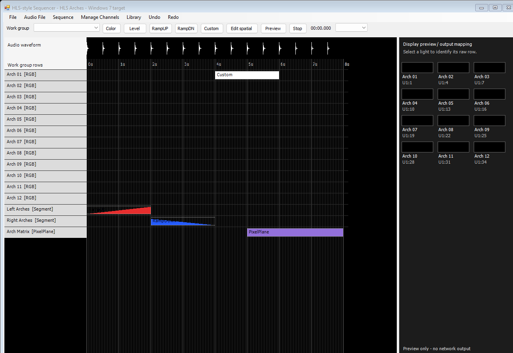

October 30, 2026 · Native Windows 7 milestone
Latest: version0.3 adds the serial custom editor, reusable effect libraries and the16MB cap fix. Open the current workflow/update · Download version0.3. The channel-hierarchy milestone below is retained as history.
Built: a native x86 WinForms executable against the full .NET Framework 4.0 reference API, using C# 4 syntax. It has real raw-channel, display-group, Segment and PixelPlane editors. The previous browser prototype stays available separately. No browser, Node.js, Python, Electron or WebView runtime is required to run this build.
Executable · Instructions · Editable demo · Rendered demo · Validation evidence. Extract the complete ZIP before starting the executable so its configuration and original demo audio remain beside it.
| Tool | What works | Relationship to HLS |
|---|---|---|
| Manage Raw Channels | Bulk addition, editable names/types/universe/address/order/color, Dimmer and RGB widths, universe rollover, universe-zero offline rows, collision validation and reference-aware deletion. Pending table edits survive Add; Save/Cancel use an isolated project copy. | Follows the documented raw-channel-first entry point. Physical patch, work-group row order and preview identity are kept separate. Complete HLS control-channel types, dimming curves, protocol flags and CSV/library tools remain future work. |
| Display/work groups | Any target can belong to multiple groups. Each group has its own ordered rows; add/remove, Up/Down, rename and delete operate on references. Deleting a group leaves effects and physical channels intact. | Preserves HLS’s flexible editing scopes. Groups can contain raw channels, Segments and PixelPlanes. The exact final-version group dialog has not been reproduced pixel for pixel. |
| Segments | Named raw-channel memberships compact into one timeline row. Level/RampUP/RampDN/Custom effects fan out to members. Shared members and mixed Dimmer/RGB rows are supported. | Recreates the developer’s time-domain one-row mechanism. Nested Segments are not implemented. Overlapping writers use component-wise highest value; original HLS precedence remains unverified. |
| PixelPlanes | Sparse XY maps, named RGB assignment dropdowns, horizontal/vertical/serpentine wizard, holes and reference-protected dimension changes. Spatial clips have manually paintable frame keys, editable key timing, duplicate/delete, speed divisors and fades. | Spatial clips remain distinct from normal time primitives. Rewiring an unchanged-size plane preserves its painted frames. The painter, top-left row-major origin and wizard details are reconstruction choices, not verified replicas of all HLS PixelPlane tooling. |
The classic waveform-over-grid view supports two-click rectangles, direct edge movement/resizing, numeric start/duration editing, editable Custom curves, undo/redo and a work-group selector. The initial group includes raw, Segment and PixelPlane rows so the demo exposes all three levels. PixelPlane rows use Custom to create a spatial clip, then Edit spatial to paint its frames.
Sequence → Time resolution selects 10/20/25/50/100 ms data intervals. The default is 50 ms, following the historical guide; these application choices are not a claim about the complete resolution list or reported ceiling in original HLS. Timeline snap/hit/resize math follows the selected interval, while zoom controls visual spacing.
Preview samples the same hierarchy renderer used for FSEQ export and follows WinMM’s audio-device position. The UI repaint timer is not an independent song clock. The raw-light preview scrolls and identifies the selected channel’s row and patch. The build previews and exports; it does not send data to controllers.
Saved projects use this application’s .hlsr XML format. Atomic replacement keeps the previous save as .bak; recovery and undo snapshots preserve IDs and references. Opening another file resets undo history to protect file associations. Native .hls, HLS libraries and the earlier browser JSON format are not imported by this executable.
Microsoft lists .NET Framework 4 as installable on Windows 7. This executable targets that API set explicitly and requires a full Framework 4.0 or compatible later 4.x installation. PE inspection confirms I386/x86, Windows GUI subsystem, CLR metadata v4.0.30319, and 32-bit-required managed code. No modern-runtime dependencies are bundled. Microsoft runtime table.
Passed: warning-free build and 76 checks covering hierarchy rendering, mixed addressing, group/Segment operations, sparse remapping, spatial key timing, save/load, protected edits, fine-resolution selection, locale-independent curves and actual manager/controller handlers. Own controls were rendered offscreen without showing desktop windows or opening an audio device. The source, log, SHA-256 manifest and validation record are included.
Still unverified: execution on an actual Windows 7 system, visible interaction on that OS, audio-driver behavior, physical output/audio-to-light synchronization, downstream FPP loading, and complete parity with a specific original HLS version. Compilation against old references is compatibility evidence, not an OS test.
Offscreen bitmaps of the actual application controls, not desktop screenshots. Some native dropdown text may be absent in hidden-control printing.

Raw channel manager · Display groups · Segments · PixelPlane assignment · Spatial frame painter
The mechanisms follow Joe Hinkle’s raw/RGB/work-group demonstration, the preserved group instructions, his Segment/PixelPlane explanation and mapping-wizard discussion. His custom-effect tutorial supplies further context for manual authoring. No original HLS code/assets or competitor UI/code are used.
This milestone limits physical patching to 64 × 512-slot universes and PixelPlanes to 32 × 32 cells. Additional local format limits bound malformed/oversized project data. They are prototype constraints, not claims about HLS limits. Painted spatial keys hold their color until the next key; speed division delays source progress within the clip window. Full original spatial generators/imports, multi-line Custom construction, libraries, output protocols, shared house configuration and scheduling remain later parity work.